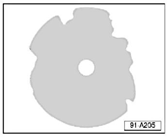
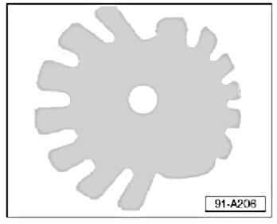

Audio System - CD Player Jams/Magazine Won't Eject
ConditionUse of Novelty Compact Discs in Compact Disc (CD) Players
CD player jams or magazine will not eject.
91 07 01 Jan. 24, 2007 2002228 Supersedes T. B. Group 91 number 98-02 due to additional models, model years and inclusion into ElsaWeb.
Technical Background
May be caused by the use of novelty (shape) CD's which have shapes (see examples A and B) other than the intended shape for CD players.
Production Solution
No production change required.
Service
Example A

A CD revolves at high speed within the CD player. Novelty CD's can warp and may not eject from the CD player, see example A and B.
NOTE:
Most Novelty CD's come with WARNINGS: DO NOT USE IN AUTOMOTIVE CD PLAYERS.
ONLY use standard size CD's in the CD player.
Volkswagen of America, Inc. may deny warranty coverage if a CD changer fails due to improper CD usage

Example B
Warranty
Information only.
Required Parts and Tools
No Special Tools required.
No Special Parts required. Always see ETKA for the latest part(s) information.